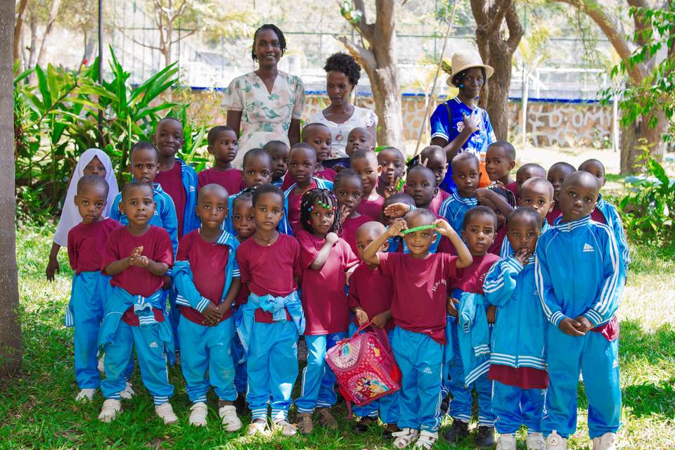

Daycare
Ages 2–5
Young children learn through guided play, songs, stories, movement, conversation and dependable daily routines. Care, safety and early language come first.
Learning at Jupe Hills
Our programmes move from care and purposeful play to reading, number confidence, subject knowledge and responsible independence.
Programmes
Ages 2–5
Young children learn through guided play, songs, stories, movement, conversation and dependable daily routines. Care, safety and early language come first.
Baby Class · Middle Class · Pre-Unit
Children build early literacy, number sense, pencil control, listening skills and confidence in a classroom group.
Standards I–IV confirmed
Structured lessons develop core academic skills and study habits. The school’s current confirmed public profile covers Standards I–IV.
Daycare in detail
At ages two to five, children need security, movement, conversation and repetition. The daycare day balances active play with quieter moments, simple tasks, meals and rest.

Primary curriculum
| Stage | Core learning | Additional development |
|---|---|---|
| Pre-primary | Early literacy, early numeracy, communication | Art, movement, play, social routines |
| Standards I–II | Kiswahili, English, Mathematics | Health, environment, arts, physical activity |
| Standards III–IV | Kiswahili, English, Mathematics, Science | Social studies, civics, arts, sport |
| Standards V–VII | Upper-primary provision and subjects are to be confirmed with the school before publication. | |
How children learn
Teachers model a new idea in small, understandable steps.
Children read, write, count, discuss and apply the skill themselves.
Questions, short tasks and observation show what needs more support.
Encouragement and useful feedback help children keep trying.
School year
| Period | Indicative dates |
|---|---|
| Term 1 | January–April |
| Term 2 | May–August |
| Term 3 | September–December |
Exact opening, closing and holiday dates will be published after confirmation.
Resources